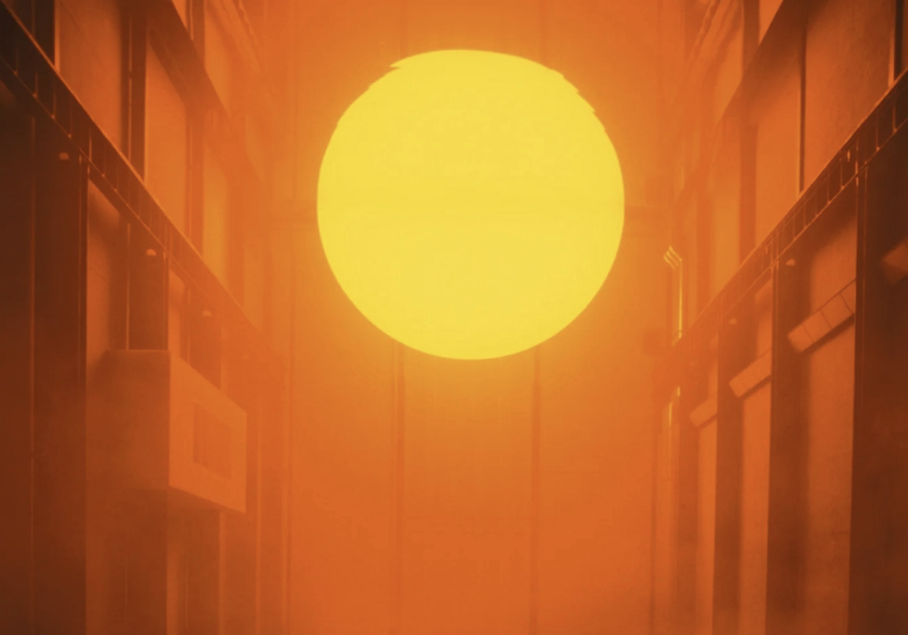

During this week’s class, we began by filling grids with different inputs and outputs, then experimenting with unusual combinations. However, I felt somewhat constrained by our original ideas for the final project, which mostly revolved around familiar elements such as screens, receipt printers, and lights. Although we created many combinations, they felt somewhat meaningless to me — almost like empty skeletons without any veins or flesh to bring them to life. I struggled to imagine how these technical combinations could develop into a meaningful interactive experience. After class, I explored John’s design library and researched various art exhibitions, where I discovered many inspiring ideas and interactive works. These references helped me rethink the possibilities of interaction design and gave me a much clearer sense of direction for future development. See more in the next section!
FRUIT INSTRUMENT
View reflection
We made a fruit piano!!! COME AND PLAY WITH IT!!XD
RESEARCH JOURNAL

View reflection
The Weather Project, created by Olafur Eliasson for the Turbine Hall of Tate Modern in 2003, transformed the industrial exhibition space into an artificial climate environment. Using mono-frequency lamps, mirrors, and mist, Eliasson created a glowing artificial “sun” that blurred the boundary between reality and illusion. After learning about The Weather Project, I began asking myself: why am I making this installation? I started reflecting on the world around me — ongoing wars, the loss of loved ones, and the common Chinese belief in fate. My parents often say, “This is fate. We are born with it, and we cannot change it.” Nah, I do not believe that human beings are powerless. Ta-da! The idea popped up in my head that I wanted to visualise the invisible power within every human body: the HEATBEAT.